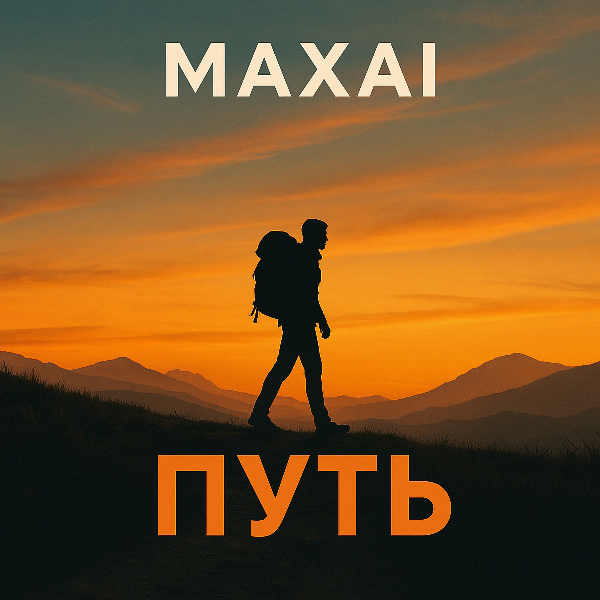

17.07.2025
Так хочется всё бросить и уехать,
Куда-нибудь отсюда далеко.
Увидеть все закаты и рассветы,
Залезть на горы - выше облаков.
Смотреть, как небеса скользят над миром,
Как в пропасть рвётся чистый водопад.
Оставить страх, что шёл за мною следом,
И тишину принять как свой обряд.
Я не бегу — я просто возвращаюсь
Туда, где мир не просит быть другим.
Где нет нужды сражаться или прятать,
Где можно просто быть — и быть живым.
Попасть в саванну или в мрак пустыни,
Где ночь с песком нашепчет мне рассказ.
И под вулканов огненные струи
Почувствовать, что в мире есть баланс.
Услышать океан, ледник, речные броды,
Встречать людей, так не похожих на меня.
Почувствовать всю красоту природы,
Побыть в лесу с палаткой у огня.
Я не бегу — я просто возвращаюсь
Туда, где мир не просит быть другим.
Где нет нужды сражаться или прятать,
Где можно просто быть — и быть живым.
Я больше не бегу — я научился
С самим собой в согласии молчать.
Не всё легко, но путь уже открылся —
И я готов весь мир в себе принять.
Чтоб привести в порядок свои мысли,
А в сердце наконец пришёл покой.
Отбросить всё, что мне мешает в жизни
И просто насладиться тишиной.
Я не бегу — я просто возвращаюсь
Туда, где мир не просит быть другим.
Где нет нужды сражаться или прятать,
Где можно просто быть — и быть живым.
До прослушивания: Ощущение усталости, поиск смысла, желание перемен, тоска по покою.
После прослушивания: Спокойствие, принятие себя, ощущение внутренней свободы, вдохновение идти вперёд.
Трек «Путь» — это песня о поиске гармонии с собой и миром. Здесь путешествие не бегство, а возвращение к истоку, отказ от масок и суеты. Смысл — в праве просто быть и не бояться тишины, покоя и своих желаний.
Чередование куплетов и повторяющегося рефренa. Куплеты — разные этапы внутреннего пути: стремление, поиски, принятие. Припев объединяет опыт в одну цель — вернуться к себе.
Исполнитель — человек, прошедший внутренний кризис, говорящий честно и просто. В голосе ощущается усталость и одновременно светлая сила. Интонация спокойная, вдохновляющая, без надрыва.